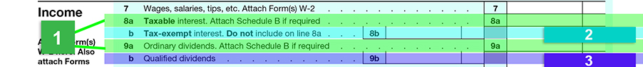
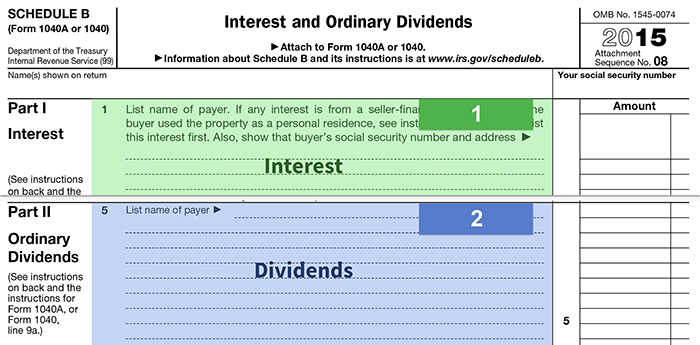

Income from investments, in the form of interest and dividends, is found on lines 8 and 9 of the tax return. Let's begin by examining the information to be learned in this section of the return and then examine how that information can help you identify potential investment planning opportunities with a client.
Click the numbered areas to learn more.

There are two key questions to be answered by this Schedule. Click each numbered area on Schedule B to learn more.
